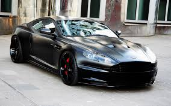
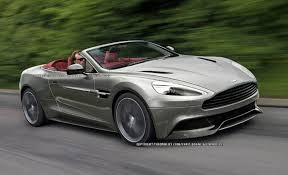

The completely unprecedented aesthetics, performance, and power to weight ratio of this aston-ishing beast is jaw-dropping. Choosing the V12 Vantage S will give the owner a new reason to live. The amount of effort and acknowledgement this super-car gives back to the driver is astounding.
The DB9

This car is one of the greatest pieces of artwork, as well as machinery, ever built. With its clean curves, sleek design, timeless reputation and classic road-loving features, the Aston Martin DB9 is definitely one of the greatest automobiles ever manufactured.
The Vanquish

How can something be so sexy, powerful, intriguing, and beautiful, with such hypnotic qualities, such as sound and the way it responds to your every command, but not be a woman? It takes a real woman to be able to appreciate another woman's beauty and these ladies on this page deserve the compliments.